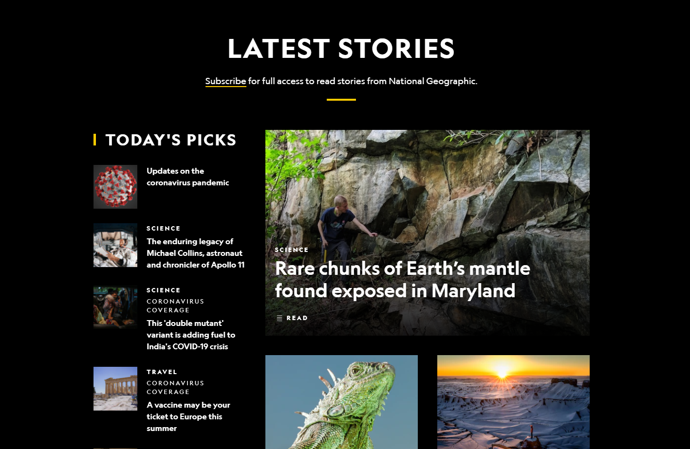
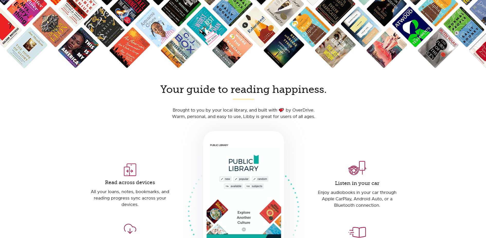

White Space
National Geographic
Published by editors of National Geographic
The white space, in black, helps to keep the home page clean and simple looking. The proper use of white space on this site draws the reader in to learn more. The white space helps to highlight the alignment and brings the focus to the images on the page. Making the header white and the background of the main content black also sets this website apart from others.
nationalgeographic.comVisual Hierarchy
Libby Reader
Designed by: Overdrive
exemplifies with the surrounding blank area that is black.
Goodreads.com